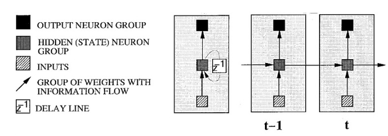
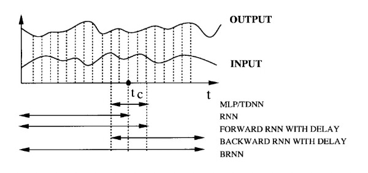
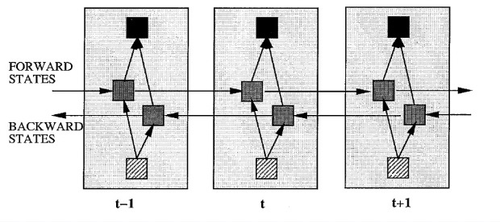
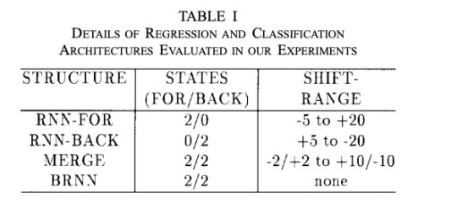
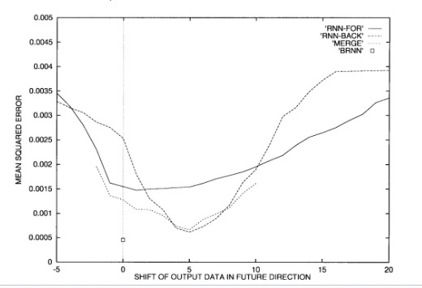
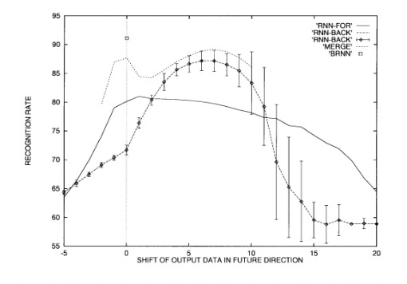
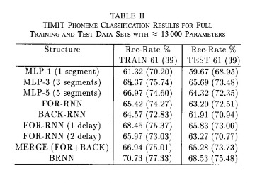
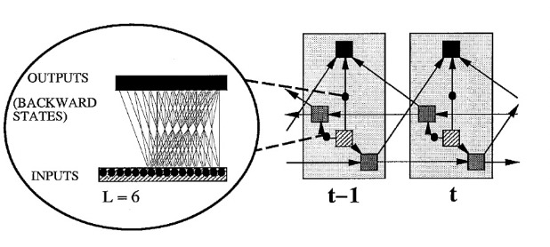
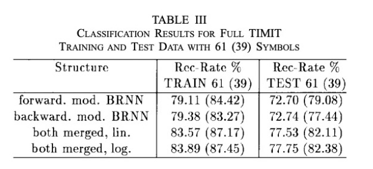

Bidirectional Recurrent Neural Networks
Annotated by: Noah Schliesman
“Understanding is a two-way street” ~Eleanor Roosevelt
Abstract
The authors incept a bidirectional RNN architecture by training simultaneously in the positive and negative time direction. This architecture results in better results for regression and classification, producing state-of-the-art results for phoneme classification in the TIMIT database. Such a model can also efficiently estimate the conditional posterior probability of complete symbol sequences without distribution assumptions.[1]
Introduction
The authors begin with the evolution of Artificial Neural Networks (ANN’s) from Multilayer Perceptrons (MLP’s), to time delay neural networks (TDNN’s), to Recurrent Neural Networks (RNNs). They note the superiority of RNN’s over the latter architectures and implement a bidirectional approach.
Consider a time-dependent sequence of input vectors,
\[ x_{1}^{T} = \{ x_1, x_2, x_3, \ldots, x_{T-1}, x_{T} \} \]
Similarly, note their corresponding time-dependent output vectors,
\[ y_{1}^{T} = \{ y_1, y_2, y_3, \ldots, y_{T-1}, y_{T} \} \]
When outputs are continuous, we have a regression problem. Conversely, categorical outputs yield a classification problem. The authors use the term prediction to include both of these types of problems. Such unimodal regression involves maximizing the log likelihood of the observed output data. If the error follows a Gaussian distribution, then the errors should exhibit a zero mean and fixed global variance.
For regression tasks, error measurement can use the Mean-Squared-Error (MSE) criterion. For an expectation operator \(E[\cdot]\), an estimated output \(y_t\), and input sequence \(x_{1}^{T}\), the estimated output can be determined as,
\[ y_t = E[y_t | x_{1}^{T}] \]
For classification, the authors use one-hot encoding to encode the categorical class labels and then use cross-entropy to train the model to classify the input data. The estimated conditional posterior probability of the input belonging to a class \(k\) is then,
\[ y_t^{(k)} = \text{Pr}(C_t = k | x_{1}^{T}) \]
Prediction Assuming Independent Outputs
The authors provide a figure for understanding the unfolding of a RNN, illustrating a striped box of inputs, a hatched box of hidden states, black boxes for output neurons, arrows indicating weights with information flow, and a box indicating a delay line (feedback loop).

RNNs are particularly suited for sequential data due to the correlations between close sequential data points. One approach has been to process input vectors \(x_t\) one at a time until time frame \(t\) to predict the output \(y_t\). Future inputs information can be utilized by delaying the output prediction by a certain number of frames after \(t_C\). As \(M\) increases, the RNN focuses too much on recent input and loses its ability to generalize. This process relies on an optimal delay \(M\), which is often only determined via trial-and-error.

To utilize all available input information, the authors use two separate RNNs (one for each time direction) and merge their results. Linear Opinion Pooling and Logarithmic Opinion Pooling are described as methods for merging the outputs of different networks.
Linear Opinion Pooling assumes the predictions of the network are independent and averages them arithmetically (suitable for regression). Let \(p_i(C)\) be the probability estimate of class \(C\), and \(w_i\) be the weight assigned to the \(i\)-th model. The linearly pooled probability is described as,
\[ p_{\text{linear}}(C) = \sum_{i=1}^{n} w_i p_i(C) \]
On the other hand, Logarithmic Opinion Pooling combines the outputs of multiple models by taking a weighted geometric mean of their predictions (i.e. arithmetic mean in log domain). Let there be a normalization factor \(Z\) that ensures the pooled probabilities sum to 1, i.e.,
\[ Z = \sum_{C} \prod_{i=1}^{n} p_i(C)^{w_i} \]
The logarithmically pooled probability is given by,
\[ p_{\text{log}}(C) = \frac{1}{Z} \prod_{i=1}^{n} p_i(C)^{w_i} \]
While such a merged RNN shows promise over traditional RNNs, it is beneficial to train a BiRNN that can be trained using all available information in the past and future of a specific time frame. The BiRNN architecture involves splitting the state neurons of a regular RNN into,
- Forward States: Responsible for processing information from past to future
- Backward States: Responsible for processing information from future to past
Since the forward states and backward states are not sequentially connected, they operate independently and capture dependencies in their respective directions. In turn, the unfolding of a delay line must include both positive and negative time directions. Such an unfolding is provided by the authors,

The authors note that the BiRNN can be trained using similar optimization algorithms like (BPTT) because the forward and backward states do not interact. If BPTT is used, the updates for the forward and backward passes must be done sequentially instead of simultaneously. The boundaries of the sequence must be initialized (typically arbitrary values like 0.5) and their derivatives should also be set to zero.
The training process can be described as beginning with a Forward Pass, which runs all input through the BiRNN for one time slice given forward states from \(t = 1\) to \(t = T\) and backward states from \(t = T\) to \(t = 1\). After computation of forward and backward states, the authors compute the outputs for the output neurons.
After the Forward Pass, we begin the Backward Pass, which computes the derivative of the objective function with respect to the forward pass time slice \(1 \leq t \leq T\). This process is performed for all output neurons, forward states from \(t = 1\) to \(t = T\), and backward states from \(t = T\) to \(t = 1\).
Once the forward and backward passes are complete, the weights are updated based on the computed gradients.
The input data is a one-dimensional vector consisting of a stream of 10k random numbers between 0 and 1. The output vector is a weighted sum of the inputs within a window of 10 frames to the left and 20 frames to the right of the current frame. Such an output vector can be calculated as,
\[ y(t) = \frac{1}{10} \sum_{\Delta t=-10}^{-1} x(t + \Delta t) \cdot \left(1 - \frac{|\Delta t|}{10} + \frac{1}{20}\right) + \frac{1}{20} \sum_{\Delta t=0}^{19} x(t + \Delta t) \cdot \left(1 - \frac{|\Delta t|}{20}\right) \]
Classification is measured as Class 0 for \(y(t) \leq 0.5\) and Class 1 for \(y(t) > 0.5\). This yields a distribution of 59% for Class 0 and 41% for Class 1.
Given this training scheme, regression and classification were conducted using different neural network architectures:
- RNN-FOR: A unidirectional RNN trained on forward time steps. Uses 2 states for the forward direction and 0 states for the backward direction. Evaluates input shift range from 5 steps before to 20 steps after the current time frame.
- RNN-BACK: A unidirectional RNN trained on backward time steps. Uses 0 states for the forward direction and 2 states for the backward direction. Evaluates input shift range from five steps after to 20 steps before the current time frame.
- MERGE: Combines RNN-FOR and RNN-BACK using linear opinion pooling (regression) and logarithmic opinion pooling (classification). Uses 2 states for the forward direction and 2 states for the backward direction. The forward input shift range was from 2 steps before to 2 steps after the current time frame. The backward input shift range was 10 steps after to 10 steps before the current time frame.
- BRNN: The bidirectional RNN described above by splitting into forward and backward states. Uses 2 states for both forward and backward directions. No shift range necessary.

Each experiment was run 100 times with different initializations to reduce the effect of local minima. Networks were trained using 200 cycles of the Modified Resilient Propagation (RPROP) technique. RPROP alleviates gradients that are too small or large by focusing on the direction (sign) of the gradient instead of its magnitude.[2] Weights were initialized in the range \([-1, 1]\) except for the output biases, which were initialized to ensure the output’s average corresponds to the prior average of the data. This in turn allows for faster convergence and a more stable training process.
Regression tasks used the \(\tanh\) activation function and were trained to minimize the mean-squared-error (MSE). Classification tasks used the softmax activation function and were optimized using cross-entropy.
The authors note that the shift range was determined via trial-and-error to represent the optimal delay. The backward RNN tended to have a larger optimal delay due to the correlation density on the left side of each frame. The MERGE network resulted in better performance across all tested delays due to the combination of information. The BRNN did not need a delay and outperformed MERGE despite having about the same number of parameters. While simple unidirectional networks struggle with the tradeoff between remembering past information and combining current information, MERGE slightly alleviates this problem and BRNN greatly improves the processing of both directions of information flow.
The performance of these networks on a regression task using MSE is shown below, illustrating the superior performance of BRNN,

Similarly, the classification task is shown by comparing the recognition rates (accuracy) of different neural architectures as the output data is shifted in the future direction (again showing the superior performance of the BRNN),

Experiments on Phoneme Classification
The authors extend the experiment to classify phonemes from the TIMIT speech database using MLPs of varying segments and the RNN variants tested above. The objective is to extract features representing the raw waveform of the speech signal in a compressed form.
The TIMIT phoneme database consists of 6.3k sentences spoken by 630 speakers, with each speaker contributing 10 sentences. To avoid bias, two sentences (which are the same) are discarded. The remaining data is split into a training set of 3,696 sentences from 462 speakers and a test set of 1,344 sentences from 168 speakers. Since the TIMIT database provides manual segmentation into phonemes, there are 142,910 segments for training and 51,861 for testing.
The objective is to extract features that represent the raw waveform of the speech signal in a compressed form. First, the authors apply a high-pass filter to boost the energy of the higher frequencies known as a pre-emphasis filter. Such a high-pass filter can be described using a difference equation. Let \(x[n]\) be the original input signal, \(\alpha\) be the pre-emphasis coefficient (in this case 0.97), and \(x[n-1]\) be the previous sample of the input signal. The output signal after pre-emphasis can be described as,
\[ y[n] = x[n] - \alpha \cdot x[n-1] \]
After pre-emphasis, the authors divide the signal into frames and analyze each frame to extract features every 10 ms using a 25.6 ms Hamming window. The Hamming window is applied to each frame to taper the edges and reduce the impact of discontinuities at the boundaries of each frame (which can introduce distorting artifacts). Given a window sample index \(n\) and frame length \(N\), the Hamming window is described as,
\[ w(n) = 0.54 - 0.46 \cos\left(\frac{2 \pi n}{N-1}\right) \]
The features extracted are 12 Mel-Frequency Cepstral Coefficients (MFCCs) derived from the 24 mel-space frequency bands and the log-energy of the signal. MFCCs are a set of coefficients that represent the short-term power spectrum of speech. Similarly, the mel-frequency scale is a perceptual scale of pitches that reflects the human ear’s sensitivity to different frequencies. After passing the speech signal through a series of band-pass filters spaced along the mel scale, a logarithm of the energy is taken in each band followed by a Discrete Cosine Transform (DCT) to decorrelate the coefficients.
The Discrete Cosine Transform (DCT) converts a signal into a sum of cosine functions oscillating at different frequencies. Let \(N\) be the sequence length, \(\{x_0, x_1, \ldots, x_{N-1}\}\) be the input signal value at index \(n\), and \(k\) be an iterator. The \(k\)-th DCT coefficient representing the contribution of the \(k\)-th cosine basis function is calculated as,
\[ X_k = \sum_{n=0}^{N-1} x_n \cdot \cos\left(\frac{\pi}{N} \cdot \left(n + \frac{1}{2}\right) \cdot k\right) \]
This process is known as DCT-II. The inverse of DCT-II is used to reconstruct the original sequence from the coefficients and is known as DCT-III.[3]
The log-energy feature represents the logarithm of the total speech energy for each frame. This captures the overall intensity of the sound, providing additional information about the signal. It is captured as the log-energy in each frequency band given the mel-spaced filters.
Each portion of the speech signal that corresponds to a phoneme (segment) is divided into five equally spaced regions along the time axis. For each of these five regions, the area under the curve (AUC) is computed for the feature (MFCCs and log energy) values within that region. Linear interpolation estimates values between these discrete points to smooth the representation. This results in a 66-dimensional input vector to the neural network,
\[ \text{66 dimensions} = 5 \text{ regions} \times 12 \text{ MFCCs} + 1 \text{ log-energy} + 1 \text{ segment duration} \]
It is beneficial for performance to normalize this vector on a per-sentence basis. This includes adjusting each feature within a segment (which corresponds to a phoneme) with a mean of zero and unit variance. This process removes any bias or scaling differences.
After normalization, each continuous feature is quantized (mapped) into a set of discrete levels, effectively compressing the information. Each feature is quantized using a scalar quantizer with 256 reconstruction levels (1 byte). Such a quantizer maximizes entropy by distributing the quantized values uniformly across available levels, resulting in information retention despite resolution reduction.
Once features are quantized, they are remapped to transform the quantized distribution into an approximate Gaussian distribution. Such a remapping is based on the inverse error function \(\text{erf}^{-1}\), which is related to the CDF of a Gaussian distribution. For a quantized value \(x\), we first want to scale into the range \([0, 1]\). This is achieved by,
\[ \text{byte}_{\text{scaled}} = \frac{\text{byte} + 1/2}{256} \]
We can then scale this value again by subtracting 1 and multiplying by 2 to shift this into the range \([-1, 1]\),
\[ \text{byte}_{\text{scaled2}} = 2 \times \text{byte}_{\text{scaled}} - 1 = 2 \times \frac{\text{byte} + 1/2}{256} - 1 \]
This range is the input range for the inverse error function. Since the inverse error function maps these values into a Gaussian-esque distribution, our neural network input for each feature is given as,
\[ \text{value} = \text{erf}^{-1}\left(2 \times \frac{\text{byte} + 1/2}{256} - 1\right) \]
These values then become our inputs for testing the performance of each neural architecture:
- MLP-1: Uses only the middle segment corresponding to the current phoneme as input
- MLP-3: Considers the middle segment and its immediate left and right neighbors
- MLP-5: Considers the middle segment and two segments on each side. It is important to note that this does not improve performance over MLP-3, denoting that the architecture is not flexible enough to utilize the additional information
- FOR-RNN: Uses acoustic context only going forward
- BACK-RNN: Uses acoustic context only going backward
- MERGE: Combines FOR-RNN and BACK-RNN using logarithmic opinion pooling
- BRNN: Simultaneously uses past and future context at each time step
The results show that the BRNN structure yields the best performance, with a recognition rate of 68.53%. The other comparisons and results are shown below,

Prediction Assuming Dependent Outputs
The authors extend their analysis to estimating the conditional posterior probability \(P(c_1, c_2, \ldots, c_T | x_1^T)\) of a sequence of classes given a sequence of input vectors \(x_1^T\) using BRNNs. We can decompose this probability based on the definition of conditional probability,
\[ P(c_1, c_2, \ldots, c_T | x_1^T) = \prod_{t=1}^{T} P(c_t | c_{t+1}, c_{t+2}, \ldots, c_T, x_1^T) \]
This product represents the backward posterior probability, which considers the current class given future classes and the entire sequence of input vectors. The sequence posterior probability can also be decomposed into a product of forward posterior probabilities,
\[ P(c_1, c_2, \ldots, c_T | x_1^T) = \prod_{t=1}^{T} P(c_t | c_1, c_2, \ldots, c_{t-1}, x_1^T) \]
Although these decompositions should be equal if the neural network is perfect, differences arise due to the fact that such networks are generally not perfect. To improve estimation accuracy, the forward and backward estimates can be combined.
The authors modify the BRNN to estimate the conditional posterior probabilities. The input for a specific time \(t\) is encoded as a long vector that includes both the target output class \(c_t\) and the original input vector \(x_t\). Instead of connecting the forward and backward states directly to the current output states, the forward states are connected to the next output states and the backward states to the previous output states. This ensures the network effectively utilizes sequential information.
Additionally, the weight connections from the inputs to backward states and from the outputs to the forward states are cut. This ensures that only discrete input information from \( t < t_c \) is used to make predictions for the current output.
The forward posterior probability is estimated by focusing on the input sequence up to \(t_c\) and its corresponding outputs. Conversely, the backward posterior probability is estimated by considering the input sequence from \(t_c\) onwards and the corresponding outputs. The authors provide a figure that illustrates how the modified BRNN processes sequences at each time step for the forward posterior estimation,

Given such a modified BRNN, the authors aim to take the original TIMIT feature vectors to classify labeled phoneme sequences. Given the original 66-dimensional feature vector, the authors encode the output class information in a 6-dimensional binary vector mapped to \([-1, 1]\) and add that information to the beginning (prepend) of the original vector, producing a 72-dimensional vector.
Two different BRNN structures are trained separately: one structure focuses on estimating the forward posterior probability and the other focuses on estimating the backward posterior probability.
The output neurons use a softmax activation for classification, with the remaining neurons using a \(\tanh\) activation.
The forward BRNN has 64 forward states and 32 backward states. The backward BRNN has 32 forward states and 64 backward states. Both networks include 64 hidden units before the output layer.
In total, the modified BRNN contains 26,333 weights in total. Using both linear and logarithmic opinion pooling, the BRNN models are evaluated for phoneme classification. The merged results are the best, and the slightly better performance of logarithmic opinion polling suggests that the two estimates can be assumed independent.

Discussion and Conclusion
The paper extends a RNN to a BRNN, allowing for training in both time directions simultaneously. This reduces the need for merging the outputs of two separate networks, thereby reducing the model complexity. This architecture also benefits from not relying on predefined delay parameters. Ultimately, the BRNN yields better results and allows for faster development.
The authors also explore a modified BRNN that can estimate the conditional probability of symbol sequences but does not identify the class sequence with the highest overall probability.
Sources
- [1] Schuster, M., & Paliwal, K. K. (1997). Bidirectional recurrent neural networks. IEEE Transactions on Signal Processing, 45(11), 2673-2681. https://doi.org/10.1109/78.650093
- [2] Riedmiller, M., & Braun, H. (1993). A direct adaptive method for faster backpropagation learning: The RPROP algorithm. Proceedings of the IEEE International Conference on Neural Networks, 1993, 586-591. https://doi.org/10.1109/ICNN.1993.298623
- [3] Rabiner, L. R., & Schafer, R. W. (1978). Digital processing of speech signals. Prentice-Hall.
- [4] Hamming, R. W. (1989). Digital filters. In Digital filters (3rd ed., pp. 89-99). Prentice-Hall.
- [5] Ahmed, N., Natarajan, T., & Rao, K. R. (1974). Discrete Cosine Transform. IEEE Transactions on Computers, C-23(1), 90-93. https://doi.org/10.1109/T-C.1974.223784